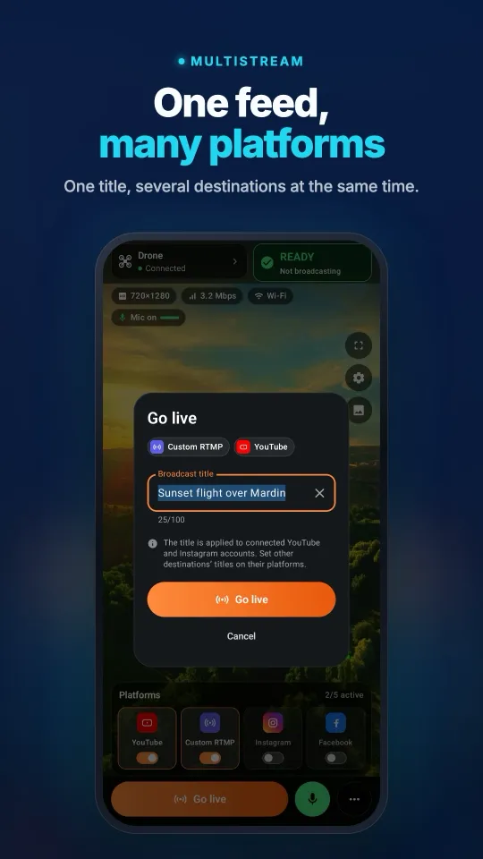
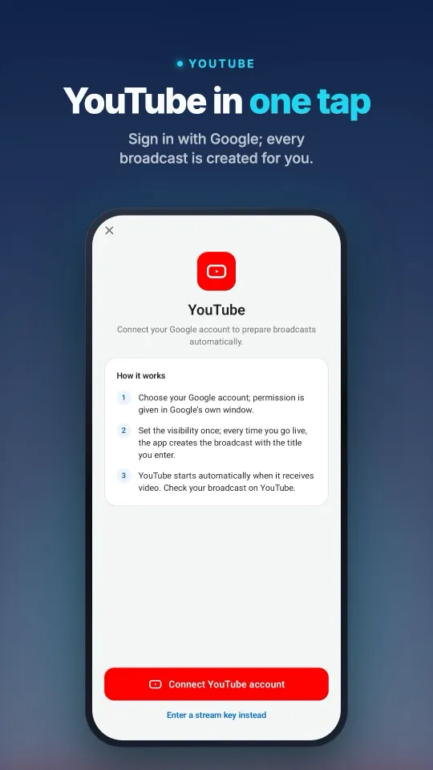
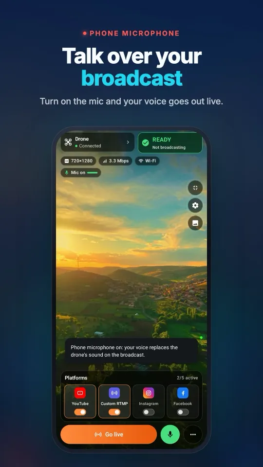
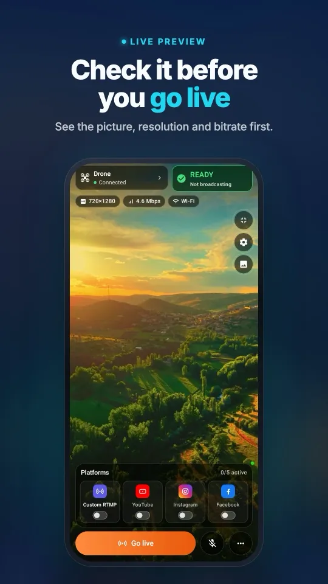
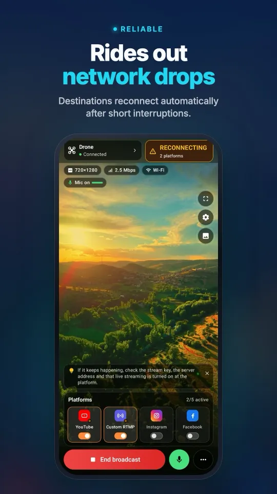

How to live stream a wedding with a drone
To live stream a wedding with a drone, fly a DJI drone with RTMP, send DJI Fly’s picture to Stream My Drone on a phone or laptop, and broadcast it as an unlisted YouTube stream whose link you share with guests who cannot attend. Use the drone for the outdoor moments only (arrival, outdoor ceremony, group photo), keep it away from the guests, and let a second person run the stream.
DJI Fly asks for a microphone on your RC 2 and won’t start the stream? Fix it without buying a mic →
In short
- A drone adds the wide outdoor shots; it does not replace a ground camera for the vows, the speeches or anything indoors.
- Two people work best: a pilot who only flies, and an operator who watches the stream and the chat.
- An unlisted YouTube stream is the simplest private option: only people with the link can watch, and the recording stays on the channel afterwards.
- Plan around 20–30 minutes of real flight per battery and bring at least three batteries, a power bank and a phone hotspot with 6–10 Mbps upload.
- Ask the couple and the venue, follow your country’s drone rules and never fly over the guests.
Plan a wedding drone live stream in 6 steps
- Get permissionAgree with the couple which moments go live, ask the venue whether drones are allowed, and check your country’s drone rules for the location.
- Split the rolesThe pilot flies and looks only at the drone. A second person runs Stream My Drone, watches the picture and answers the chat.
- Create a private streamIn YouTube Studio, create a stream with the visibility set to Unlisted and copy the stream URL and key into Stream My Drone. Send the link to guests a day before.
- Test the network at the venueCheck mobile upload where you will stand. Turn on the operator’s phone hotspot, join the controller to it, and send a two-minute test stream.
- Go live for the key momentsStart the stream a few minutes early and fly only for the planned shots. Between flights the stream can stay on with the drone landed.
- Share the replayAfter the event the unlisted stream becomes a video on the channel. The drone’s own recording is sharper and can be edited into the wedding film.
Gear list
| Item | Why |
|---|---|
| DJI drone with RTMP in DJI Fly | Mini 4 Pro, Mini 5 Pro, Air 3S or similar; see the compatibility list |
| Controller that can stream | RC 2 or a phone controller; the original DJI RC cannot stream |
| Operator phone or laptop | Runs Stream My Drone and provides the hotspot |
| 3 or more batteries | About 20–30 minutes of real flight each, less in wind or cold |
| Power bank and cables | Hotspot plus streaming drains a phone in a couple of hours |
| USB-C microphone (RC 2) | DJI Fly 1.16+ will not stream from an RC 2 without one |
See it on your phoneFrom the DJI Fly connection to a broadcast on several platforms, all on one screen.




Three setups, from simple to full production
| Setup | What you need | Result |
|---|---|---|
| Phone only | DJI RC 2 and the operator’s phone with Stream My Drone | The drone picture goes to YouTube, plus Instagram or Facebook if you like; no laptop |
| Laptop with OBS | Stream My Drone on a Mac or Windows laptop, used as a virtual camera in OBS | Switch between the drone and ground cameras, add titles and the ceremony sound |
| Event production | A video switcher with HDMI cameras and the drone as one source | Full multi-camera broadcast for a professional team |
For most weddings the phone-only setup is enough for the outdoor part. The laptop setup adds what a drone cannot give: the vows in close-up with clean sound. The virtual camera guide shows how the drone appears in OBS.
Moments that work well from the air
- The arrival of the couple and the guests’ cars, from a safe distance.
- A slow reveal of the venue and the landscape before the ceremony starts.
- The outdoor ceremony as a wide shot, high enough that the drone is not heard.
- The group photo from above, with everyone looking up.
- The couple’s walk or first dance outdoors at sunset.
Safety and etiquette
- Never fly over the guests. Keep a clear distance from people, trees and power lines.
- Avoid flying indoors: without satellite positioning the drone drifts, and a hall is full of people.
- Keep the drone high or landed during the vows; its sound carries.
- Follow your country’s drone rules: registration, line of sight and permits for events.
- Some guests do not want to appear online. Keep the link private and tell people the event is streamed.
Sound on the stream
The drone has no useful microphone; DJI Fly sends the controller’s microphone. In Stream My Drone on a phone, the operator can switch on the phone microphone to add commentary. For the vows and speeches, use the laptop setup with an external microphone or the venue’s sound system.
Setup details: how to live stream from a drone, YouTube setup and streaming to several platforms.
Questions
Can you live stream a wedding with a drone?
Yes. A DJI drone with RTMP in DJI Fly sends its picture to Stream My Drone on a phone or laptop, which broadcasts it to YouTube, Instagram or Facebook. Use it for the outdoor moments and a ground camera for the vows.
How do guests who can’t attend watch privately?
Create an unlisted YouTube stream and share its link. Only people with the link can watch, and the stream stays available as a video afterwards.
Is it allowed to fly a drone at a wedding?
It depends on your country’s drone rules and the venue. Ask the venue, follow local registration and permit rules, and never fly over people.
How long can a drone stream a wedding?
One battery gives about 20–30 minutes of real flight. Bring three or more and fly only for the planned moments; the stream itself can keep running between flights.
Do I need a laptop to stream a wedding with a drone?
No. With a DJI RC 2, a phone running Stream My Drone is enough. A laptop with OBS helps when you want to mix the drone with ground cameras and ceremony sound.
What internet do I need at the venue?
About 6–10 Mbps of steady upload for each platform. A 4G or 5G phone hotspot usually works; test it at the venue beforehand.
Take your drone live from your phone
Stream My Drone for Android and iPhone receives the DJI Fly picture and sends it to YouTube, Instagram, Facebook, TikTok, Twitch, Kick or your own server, several at once. One-time purchase, no subscription.

More guides
How to live stream from a drone (step by step, 2026)
How to live stream from a drone to YouTube, Instagram, TikTok or Facebook: what you need, the 4 methods, DJI Fly RTMP setup in 5 steps, internet speed and fixes.
DJI Fly “Livestream error”: the causes and how to fix each one
DJI Fly says “Livestream error” or “Starting livestream failed”? The 8 real causes (RTMPS, stream key, account, microphone, network) and how to fix each one.
Which DJI drones can live stream? The full model and controller list
Every DJI drone that can live stream in DJI Fly, from Mini 2 and Mini 4K to Mavic 4 Pro and Avata 360, which controllers work, and the 720p and microphone limits.
DJI RC 2 won’t livestream without a microphone? How to fix “No built-in mic in current device”
DJI Fly 1.16 won't start an RC 2 livestream without a microphone. Why it happens, what works (USB-C mic, AirPods) and a no-hardware fix with an Android phone.
How to live stream a DJI Flip
Live stream DJI Flip with RC 2, RC-N3 or RC-N2: phone and computer RTMP setup, palm and phone-control distinctions, vertical framing and platform checks.
How to live stream a DJI Lito X1
Live stream a DJI Lito X1 with RC 2, RC-N3 or RC-N2: DJI Fly RTMP settings, phone and computer workflows, platform setup and practical troubleshooting.
How to live stream a DJI Lito 1
Live stream a DJI Lito 1 with RC 2, RC-N3 or RC-N2: DJI Fly RTMP settings, phone and computer workflows, platform setup and practical troubleshooting.
How to live stream a DJI Air 3S
Live stream a DJI Air 3S to YouTube, Instagram or Facebook. Choose a controller, connect DJI Fly RTMP to a phone or computer, and check the outgoing picture.
How to live stream a DJI Air 3
Live stream a DJI Air 3 to YouTube, Instagram or Facebook. Choose a controller, connect DJI Fly RTMP to a phone or computer, and check the outgoing picture.
How to live stream a DJI Mavic 4 Pro
Stream your DJI Mavic 4 Pro with RC 2 or RC Pro 2 to a phone or computer. Check DJI Fly RTMP, microphone differences, 720p limits and platform setup.
How to live stream a DJI Mavic 3, Classic or Pro
Live stream a DJI Mavic 3, Classic or Pro with RC-N1 or RC Pro. Learn why DJI RC cannot stream, plus phone receivers, desktop RTMP and quality limits.
How to live stream a DJI Mini 3 Pro
Live stream a DJI Mini 3 Pro using RC-N1, DJI Fly on your phone and Stream My Drone on a computer. Understand why the original DJI RC cannot use this RTMP route.
How to live stream a DJI Mini 3
Set up DJI Mini 3 live streaming through RC-N1 and DJI Fly to Stream My Drone on a computer. Check DJI RC limits, 720p live-view quality and platform publishing.
How to live stream a DJI Mini 5 Pro
Live stream a DJI Mini 5 Pro with RC 2 or RC-N3. Set up DJI Fly RTMP, use a phone or computer, and send your drone feed to YouTube, Instagram or Facebook.
How to live stream a DJI Mini 4 Pro
Live stream a DJI Mini 4 Pro using RC 2 or RC-N2. Follow phone and computer setup, DJI Fly RTMP settings, microphone requirements and platform checks.
Spot and count animals live from your DJI drone
Stream My Drone spots goats, sheep, cows, horses, donkeys and poultry in your drone's live picture, marks them on the stream and counts them, all on your own computer.
DJI Fly RTMP live streaming: the complete setup
How to set up RTMP live streaming in DJI Fly: where the setting is, which address to enter, how to network the controller and computer, and how to fix it.
Why DJI Fly can't live stream to Instagram (and the fix)
DJI Fly has no Instagram option and its RTMP client cannot do the encrypted RTMPS Instagram requires. Here is why, and how to go live on Instagram from a DJI drone anyway.
Turn your DJI drone into your computer's webcam
Turn your DJI drone into a webcam for TikTok LIVE Studio, OBS, Zoom, Google Meet or Teams with the Stream My Drone virtual camera. Setup, ideas and fixes.
How to live stream a DJI Neo
How to live stream a DJI Neo: which control mode works (phone, RC-N3, goggles), RTMP in DJI Fly, and going live on Instagram, TikTok or YouTube with Stream My Drone.
How to live stream a DJI Avata 2
How to live stream FPV footage from a DJI Avata 2: share the Goggles 3 view to DJI Fly on your phone, stream over RTMP and go live on Instagram, TikTok or YouTube.
Live stream your DJI Osmo camera to Instagram, TikTok and more
DJI Mimo can stream Osmo Action, Osmo Pocket and Osmo 360 cameras over RTMP. Send that to Stream My Drone to go live on Instagram, TikTok and YouTube at once.
How to live stream an Osmo Pocket 3 to Instagram and TikTok
How to live stream a DJI Osmo Pocket 3 over RTMP from DJI Mimo to Instagram, TikTok and YouTube at once, and use it as a wireless webcam, with Stream My Drone.
How to live stream an Osmo Action camera to Instagram and TikTok
Live stream a DJI Osmo Action 6, 5 Pro, 4 or 3 over RTMP from DJI Mimo to Instagram, TikTok, YouTube and Twitch at once with Stream My Drone. Setup and settings.
How to go live on TikTok with a DJI drone
Stream a DJI drone live on TikTok from DJI Fly: with a TikTok stream key, or without one through TikTok LIVE Studio and a virtual camera. Settings and fixes.
How to go live on Instagram with a DJI drone
Go live on Instagram from a DJI drone: get the stream URL and key on instagram.com, send DJI Fly's RTMP stream through Stream My Drone, then press Go live.
How to live stream a DJI drone to YouTube
Stream a DJI drone live to YouTube: enable live streaming, copy the stream key from YouTube Studio, send DJI Fly's RTMP through Stream My Drone. Settings and tips.
How to go live on Facebook with a DJI drone
Stream a DJI drone live on Facebook: get the RTMPS server URL and stream key from Live Producer, send DJI Fly's stream through Stream My Drone, and go live.
How to stream a DJI drone on Twitch
Stream a DJI drone live on Twitch: copy your stream key from the Creator Dashboard, add Twitch as a custom RTMP destination in Stream My Drone and go live.
How to stream a DJI drone on Kick
Stream a DJI drone live on Kick: copy the stream URL and key from the Kick dashboard, add them as a custom RTMP destination in Stream My Drone, and go live.
Stream a DJI drone to several platforms at once
Send one DJI drone live stream to TikTok, Instagram, YouTube, Facebook, Twitch and Kick at the same time with Stream My Drone — free, local, no restream service.
Stream My Drone vs Restream: which one for your drone?
Streaming a DJI drone to several platforms: Restream's cloud relay or Stream My Drone on your own computer? Cost, watermark, Instagram, vertical video and when each one wins.
Stream a DJI drone without setting up NGINX and OBS
The usual way to get DJI Fly into OBS is an NGINX RTMP server, a config file and a media source. Here is what that setup involves, and the one-app way to skip it.